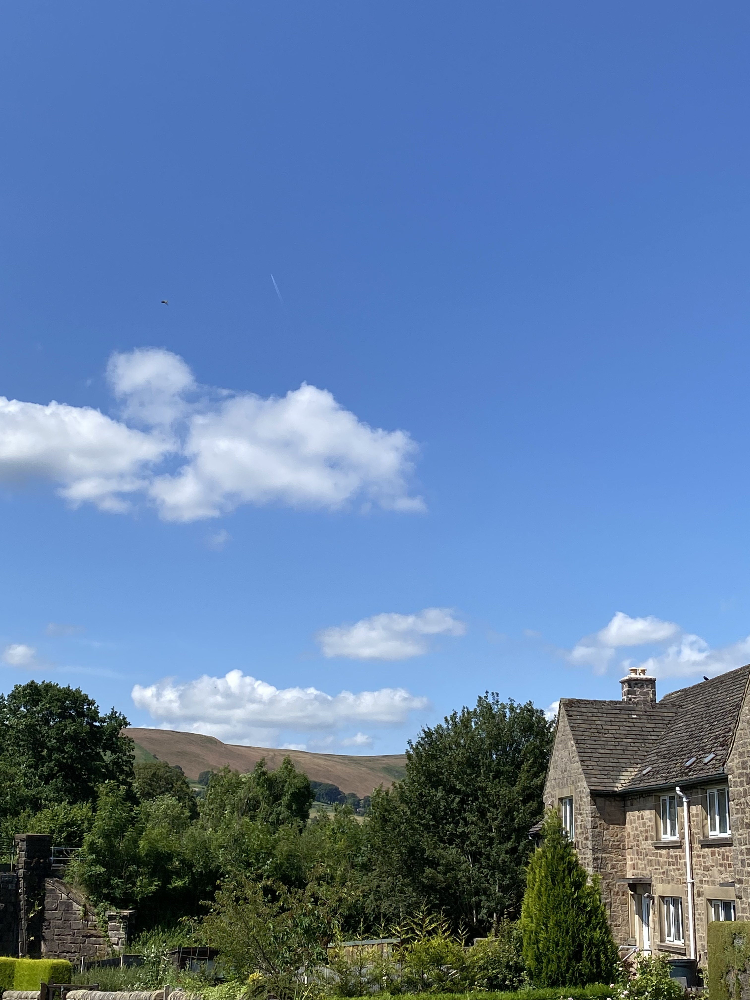
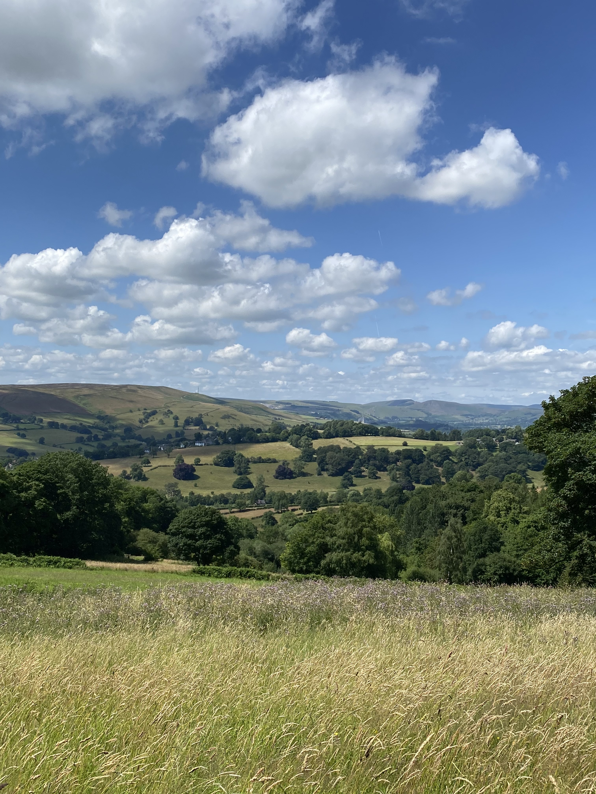
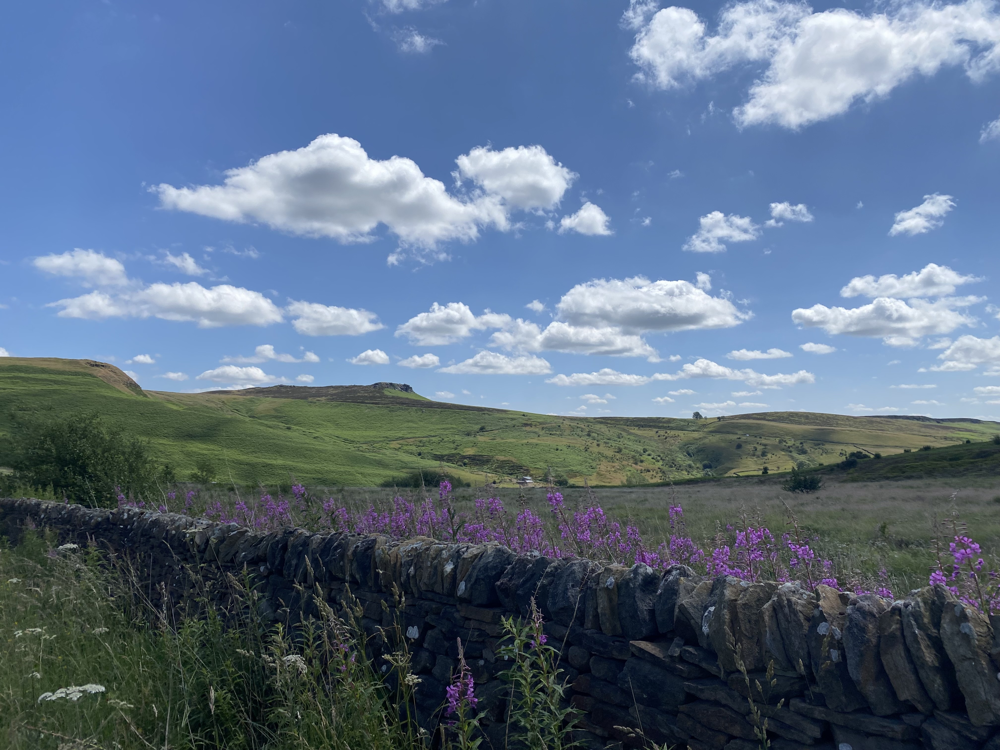
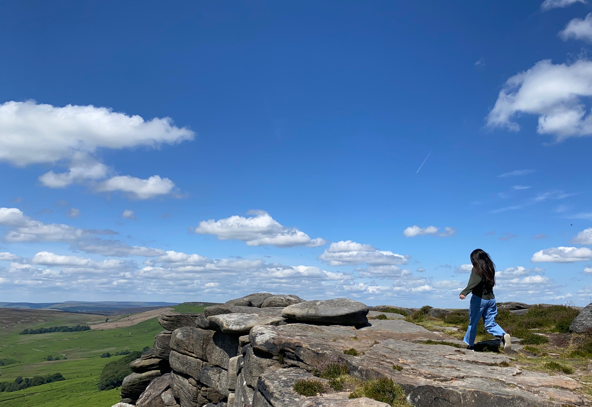
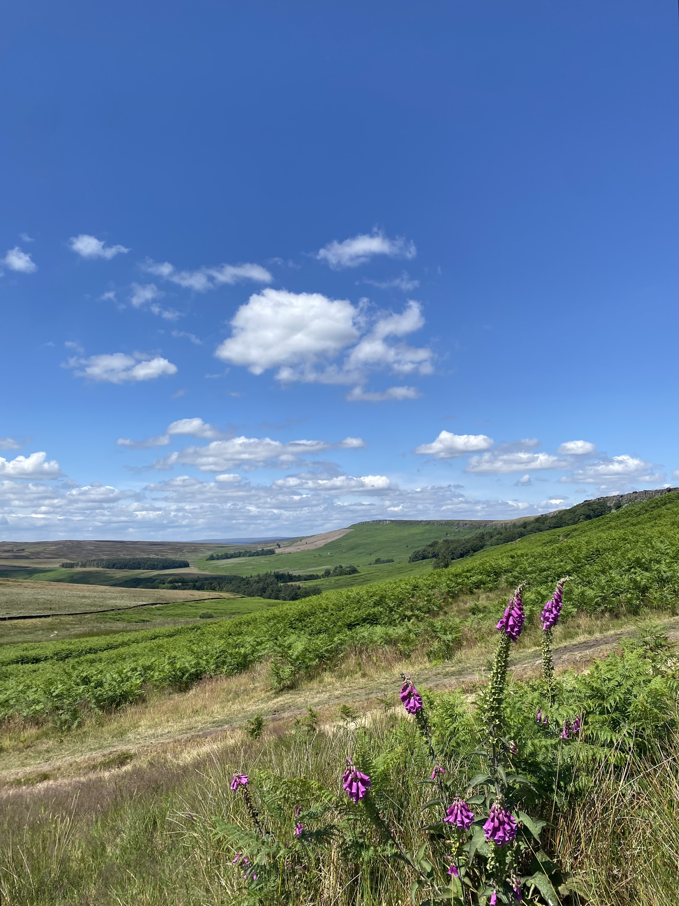

During the summer before my senior year in undergrad, I studied abroad in London. This was a great opportunity to gain more real world journalism experience, but it was also a great opportunity for me to visit Stanage Edge, which is a location featured in my favorite movie, Pride and Prejudice (2005). I bought a train ticket to Doncaster in northern England and then caught another train to Sheffield. From there, I bought a ticket to Manchester and got off on the first stop between the two cities in a town called Hathersage.
Hathersage is well known for being a location where Robin Hood spent some of his time — legend has it that he had a hideout in a cave somewhere on Stanage Edge. Although I didn’t travel to Hathersage to visit the town, it was absolutely adorable. Follow my trek from the train station all the way to the cliffs!
◀ PreviousNext ▶

After I got off the train, I walked through a residential area. One of the first things I could see on the horizon were these beautiful rolling hills. Having been in the city all summer, it was great to be out in nature.
After walking through the town, I got to a field where multiple signs pointed in the direction of a specific church. It was so quiet, and the cows were peacefully eating the grass in the field. At this point, I could already see the cliffs of Stanage Edge, which was very helpful with navigation and knowing where I was going.
Once I got to the end of the field, I walked through a gate and then made my way through another grassy field with a stream. I kept walking until I entered into a paved pathway that was under a canopy of trees. It was pretty dark, but the temperature was nice because of it. As I gained elevation, I could start to look around and see the hills around me.

This was around the time when I kind of got lost. However, since I could see the cliffs and knew which direction I was going the whole time, it made it a bit easier. I accidentally walked through someone’s farm and had to run away from a few pigs, but besides that, it was a very pleasant walk.

When I got to the top, there was a road that connected to the path. I followed the road, and it took me past beautiful purple flowers. I could see that I was almost to Stanage Edge. This was when I started to get really excited!
The road I was walking down connected to a main road with a decent amount of traffic. I walked on the side where there were sheep that came up to me. I tried my best to pet the sheep while also not getting hit by any cars.

I walked into the Stanage Edge parking lot. A few people had climbing equipment. I didn’t realize this at the time, but Stanage Edge draws a lot of climbers.
The last little bit of the trail was the steepest part. I walked up it to finally make it to the cliffs, and then climbed on a few rocks in order to get up to the ridge. I was so happy to finally be there and be able to do the hike.
Here is the picture I included in my mountain html page! I took this picture by propping my phone up on a rock and then hitting the timer.

All in all, this hike was one of my favorites, and it was definitely worth the $80 I paid in train tickets. It took about an hour in total from the train station to the peak. It was just as beautiful as I thought it would be, and the weather could not have been better! I highly recommend this hike to anyone who enjoys nature.